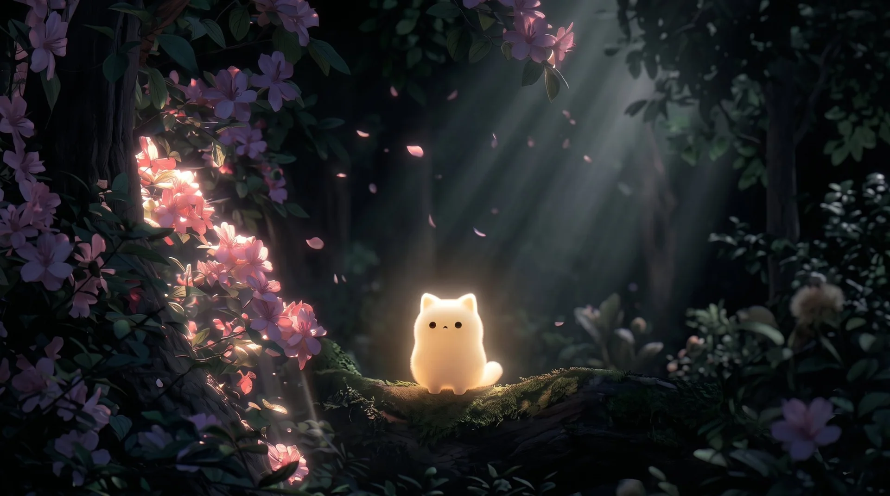

01 · AILatent Garden

DATA SCIENCE DEVELOPER / CREATIVE TECHNOLOGIST

DATA SCIENCE DEVELOPER / CREATIVE TECHNOLOGIST
CREATIVE PROCESS / FIVE STAGES
Ideas & Inspiration
Output
03 / SELECTED WORKS
One painted piece and four projects I built and shipped on GitHub. Open a card to see the code.
04 / EXPERIMENTS
A playground of small, unfinished ideas. Move the cursor, drag, nudge the sliders.
05 / RESUME & CV
A one-page resume for quick scanning, and a visual CV with the full picture. Both open as PDFs in a new tab.